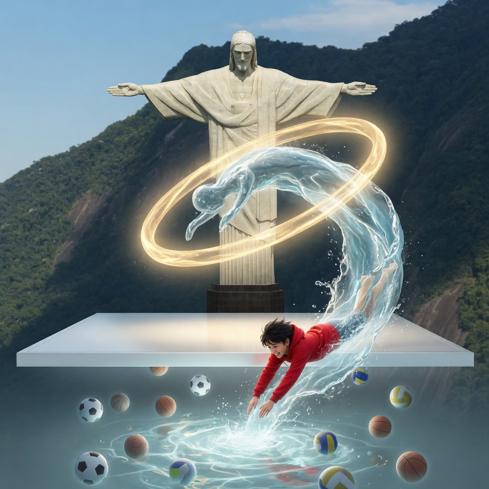
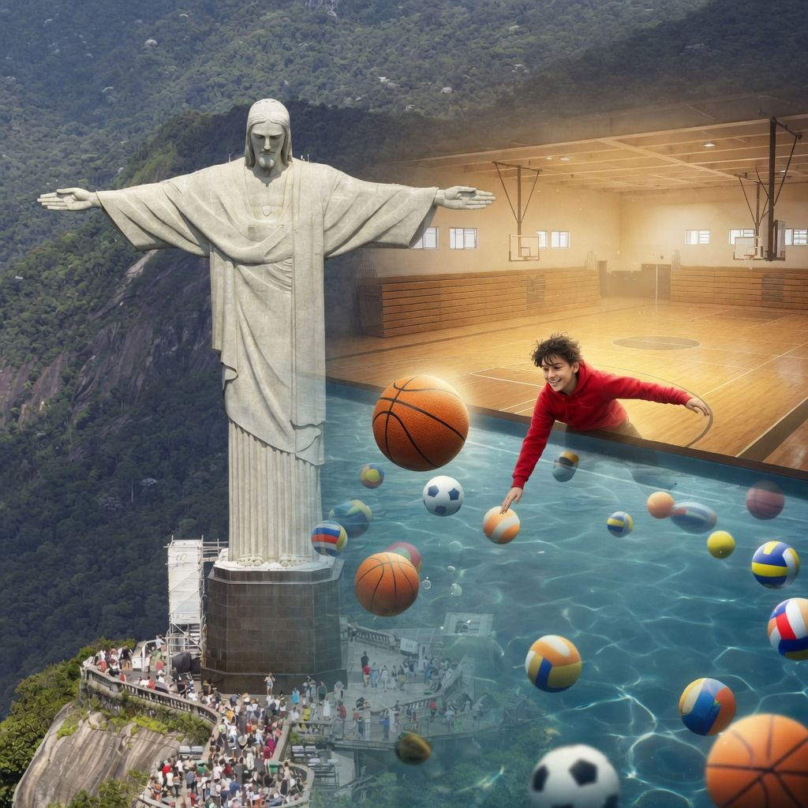
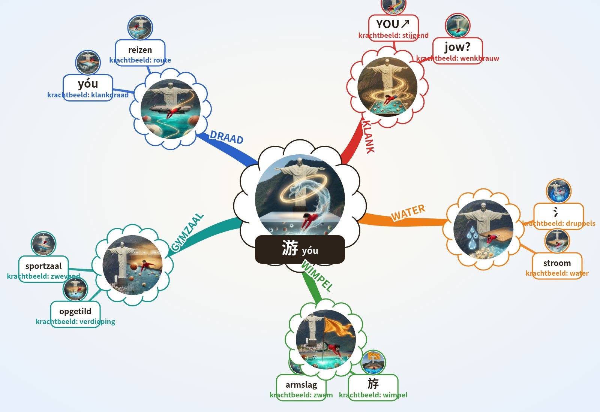

游
beeld in wachtrij
(beeldgenerator tijdelijk geblokkeerd)
uitleg
In de Zwevende gymzaal duik ik van de opgetilde vloer het water in; ik roep “YÓU!” en zwem tussen zwevende sportballen.
zwemmen
7 korte stappen · ongeveer 10 minuten
1 Kern · het woord
Pinyinyóu
Toon2
Engelsto swim; to wander; to travel
Klank-haak · klinkt als
Chinees = moedertaalstem. NL/EN/ES = klank-haak, geen vertaling.
Beeld-haak
IK zwem vrij door het water en zwaai mijn armen als een wimpel, terwijl ik 氵 (water, betekenisdeel) en 斿 (yóu, klankdeel; wimpel / vrij zwemmen) naast me zie.

Paleis-plek
Paleis · Lorentz Lyceum, Arnhem Zuid · stop 10 zwevende gymzaalPaleis · Wereldwonderen · nog geen stop
2 Klank
Tik een lettergreep: hij valt zoals de toon.
yóu = 2e toon: kort en stijgend; klinkt als NL 'jow', EN 'you', ES 'yo'.
De 4 tonen
→ 1e hoog en vlak · ↗ 2e stijgt · ↘↗ 3e zakt en veert terug · ↘ 4e valt hard · licht = neutraal.
3 Geheugenbeeld
beeld in wachtrij
Trek een zwemslag door de lucht en zeg yóu.
uitleg
Paleis · Lorentz Lyceum, 10 stops
- Spoorviaduct het hele station hangt boven de Metamorfosenallee
- Stationsgebouw verkeersgebouw van Edwin Megens, 2005
- Beschilderde pijlers muurschildering 2024: groen, geschiedenis, wijk
- Metalen gevel Lorentz gevelsysteem van Rakon (?)
- Cruijff-court kooiveld op het schoolplein
- Glaswand aula grote glazen buitenwand
- Zittrap brede trap die tribune is
- Vleugel vleugel in de aula
- Atrium hart van de school, grafische prints op de wanden
- Zwevende gymzaal sportzaal opgetild naar de 1e verdieping
- Chinese Muur eindeloze stenen draak over de bergkammen, wachttorens
- Verboden Stad rode muren, gouden daken, poorten in een rechte as
- Angkor Wat vijf lotustorens gespiegeld in de vijver
- Taj Mahal witte marmeren koepel, vier minaretten, lange waterspiegel
- Petra tempel uitgehakt in roze rots (Al-Deir)
- Piramides van Gizeh reusachtige stenen driehoek in de woestijn
- Colosseum ronde arena met bogen, half afgebrokkeld
- Chichén Itzá trappenpiramide van El Castillo, slangenkoppen onderaan
- Machu Picchu stenen terrassen op een bergtop in de wolken
- Christus de Verlosser reuzenbeeld met gespreide armen boven Rio
O'Brien: 10 Gymzaal 1e verdieping: de sportzaal op de eerste verdieping; ik trek een zwemslag door de lucht en roep YÓU! naar de overkant.
Alleen echte, unieke kenmerken (monument-regel). (?) = niet zeker.
4 Schrift
氵
氵 water, betekenisdeel · 斿 yóu, klankdeel (ook beeld: wimpel / vrij zwemmen)
Schrijfvolgorde
Tik op Oefen en teken streek 1.
Streken · namen
De hanzi bij elke streek is de officiële streeknaam uit elk Chinees schrijfboek, geen lesstof. Tik of houd de naam vast voor de betekenis.
Opbouw · 游 = 氵 3 + 斿 9
Rood = de nieuwe streek.
Vrij trekken (bord)
Geschiedenis
Twijfel
5 Radicaal · Familie
Radicaal
- 河hé · rivierLinks drie waterdruppels: rivier.
- 海hǎi · zeeWaterradicaal links: zee vol druppels.
- 湖hú · meerDrie druppels links: meer.
- 洗xǐ · wassenWater links: wassen met water.
- 酒jiǔ · alcohol/wijnDrie waterdruppels links: drank.
- 汗hàn · zweetWater links: zweetdruppels.
- 清qīng · helderWater links: helder water.
Familie
6 Actieve recall · oefenen
Snel ophalen · 6 manieren
Samen oefenen · organisatie
Wij dekken de kaart en tonen een plek. Jij haalt het woord op (zegt of doet).

Wij: cue + tijd. Jij: ophalen.
Recall-tabel
| Nr | Hersenen | Teken | Station | Volgende |
|---|
7 Herhaal-ladder
Druk GO: de kaart komt terug na een uur, een dag, een week, een maand, 3 maanden en een jaar.
uur · nog leeg
dag · nog leeg
week · nog leeg
maand · nog leeg
3m + 1j · nog leeg
Extra · voor gevorderden
Mindmap (Buzan) · tik een tak

● plek ● beeld ● woord ● toon
Gereedschap · 10 tools
Paleis-loop · deuren
1 · DEEL 1 · WATER druppels
De drie rode druppels 氵 dragen water.
氵shuǐwater; betekenisdeel
2 · DEEL 2 · WIMPEL yóu
斿 klinkt als yóu en beeldt een wimpel / vrij zwemmen.
斿yóuklankdeel; wimpel / vrij zwemmen
3 · CENTRUM · ZWEMMEN YÓU↗
Samen is 游 zwemmen, rondtrekken, reizen.
游yóuzwemmen; rondtrekken; reizen
4 · PALEIS · ZWEVENDE GYMZAAL zwemslag
Bij de zwevende gymzaal trek ik een zwemslag door de lucht.
游yóu
Eén adem
氵。斿。游。游。
Eerst ophalen
游, 游, 斿, 氵.
Kijk nu bij stap 1.
Open de deuren hierboven om te vergelijken.
BEELD
Welk teken?